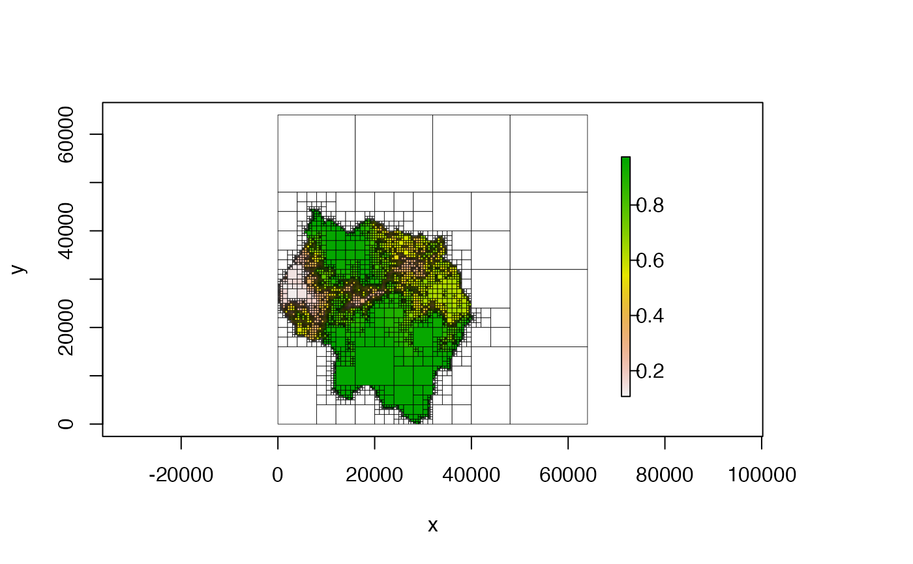
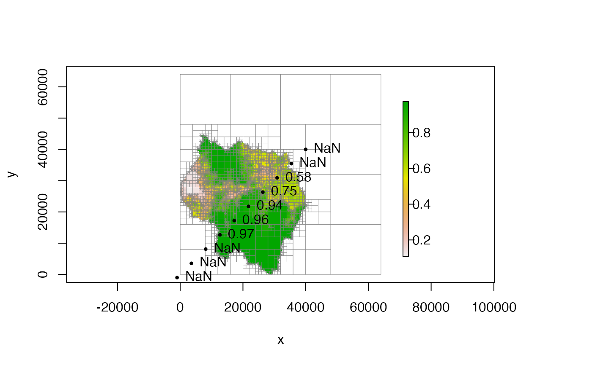

Extracts the cell values and optionally the cell extents at the given points.
# S4 method for Quadtree,ANY
extract(x, y, extents = FALSE)a Quadtree
a two-column matrix representing point coordinates. First column contains the x-coordinates, second column contains the y-coordinates
boolean; if FALSE (the default), a vector containing
cell values is returned. If TRUE, a matrix is returned providing
each cell's extent in addition to its value
If extents = FALSE, returns a numeric vector corresponding to the
values at the points represented by pts.
If extents = TRUE, returns a six-column numeric matrix providing the
extent of each cell along with the cell's value and ID. The six columns are,
in this order: id, xmin, xmax, ymin, ymax,
value.
library(quadtree)
data(habitat)
# create quadtree
qt1 <- quadtree(habitat, split_threshold = .1, adj_type = "expand")
plot(qt1)

# create points at which we'll extract values
coords <- seq(-1000, 40010, length.out = 10)
pts <- cbind(coords,coords)
# extract the cell values
vals <- extract(qt1, pts)
# plot the quadtree and the points
plot(qt1, border_col = "gray50", border_lwd = .4)
points(pts, pch = 16, cex = .6)
text(pts, labels = round(vals, 2), pos = 4)

# we can also extract the cell extents in addition to the values
extract(qt1, pts, extents = TRUE)
#> id xmin xmax ymin ymax value
#> [1,] NaN NaN NaN NaN NaN NaN
#> [2,] 6433 0 8000 0 8000 NaN
#> [3,] 6418 8000 10000 8000 10000 NaN
#> [4,] 6376 12000 13000 12000 13000 0.9696250
#> [5,] 6054 16000 18000 16000 18000 0.9586250
#> [6,] 6041 20000 22000 20000 22000 0.9388437
#> [7,] 5754 26000 26500 26000 26500 0.7520000
#> [8,] 5606 30750 31000 30750 31000 0.5770000
#> [9,] 2303 35000 36000 35000 36000 NaN
#> [10,] 2107 40000 48000 40000 48000 NaN